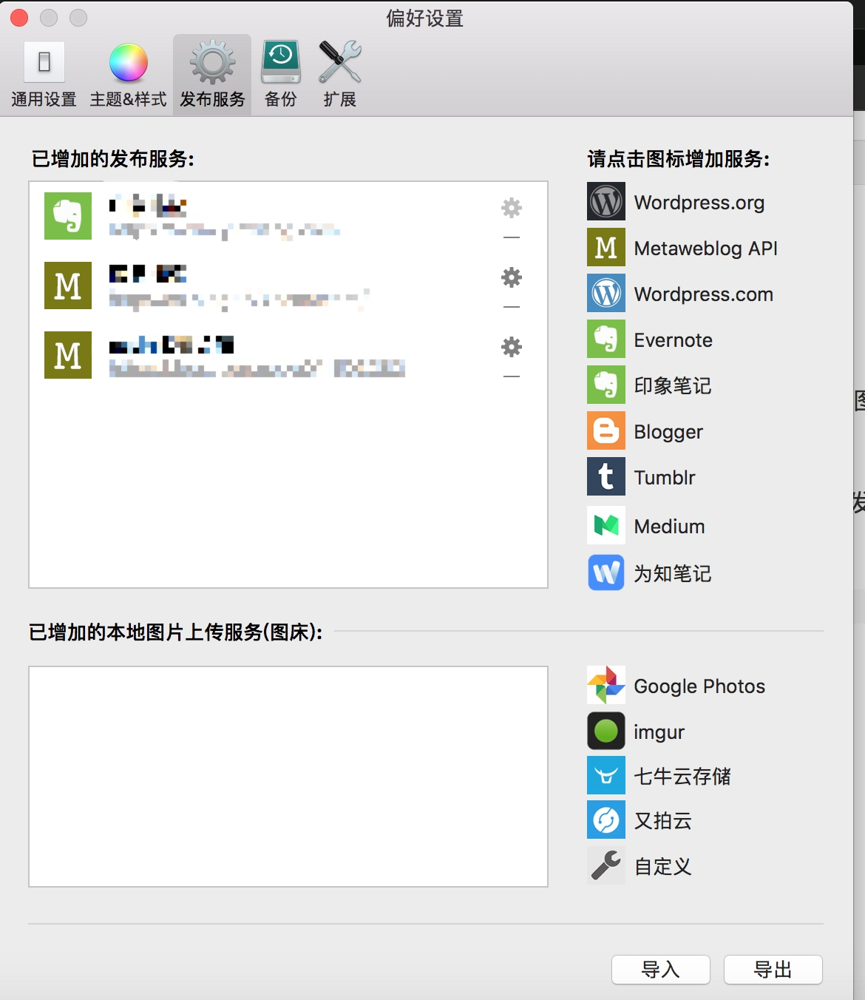

Rmarkdown
python支持
Rmarkdown对python兼容 https://github.com/rstudio/reticulate
图片
现在很多makdown编辑器是可以支持拖拽本地图片或者截屏就可以直接在markdown中生成图片的，非常方便，比如我现在在用的MWeb编辑器。
但是如果同一篇内容需要在不同的平台上进行发布，那图片处理起来就比较麻烦。因为需要重新上传到不同平台。
最方便的处理方式就是利用图床， 这里以七牛云存储为例。

step1： 首先在七牛官网上申请注册账号，并且添加对象存储
1. conda 环境管理
conda的主要作用有如下两个：
- 包管理
Anaconda 安装，conda包管理器与pip类似，不同之处是可用的包以数据科学包为主，而 pip 适合一般用途。它也可以安装非 Python 的包。它是支持任何软件的包管理器。
- 虚拟环境管理器
它类似于另外两个很流行的环境管理器，即 virtualenv 和 pyenv
脚本和程序使用的默认 Python 是 Anaconda 附带的 Python。
可以安装完整版： https://www.anaconda.com/distribution/#download-section
也可以安装精简版miniconda： https://conda.io/miniconda.html
wget -c https://repo.continuum.io/miniconda/Miniconda3-latest-Linux-x86_64.sh
# 这个版本是适合于linux的，要看清楚噢。
source ~/.bashrc
包管理-常用命令
conda list #查看安装的内容
conda upgrade --all #初次下载安装好后，建议更新所有包
安装包
conda install xxx
conda install numpy=1.10 #指定包的版本
conda remove package
conda upgrade --all
模糊查询相关包
conda search search_term
环境管理
默认的环境名字叫base(我的电脑上是)
通过conda env list可以列出你创建的所有环境
#创建环境
conda create -n env_name list of packages
eg. conda create -n my_env numpy
conda create -n py3 python=3
conda create -n py2 python=2
#进入环境
source activate my_env
#离开环境
source deactivate
# 删除环境
conda env remove -n env_name
其他
共享环境：将自己的工作环境保存下来给别人共享
#进入到你的环境中
source activate base
conda env export > environment.yaml
# 通过环境文件创建环境
conda env create -f environment.yaml
更改下载源，加速下载速度
conda config --add channels https://mirrors.tuna.tsinghua.edu.cn/anaconda/pkgs/free/
conda config --set show_channel_urls yes
或者是更改配置文件 ~/.condarc
channels:
- https://mirrors.tuna.tsinghua.edu.cn/anaconda/pkgs/main/
- https://mirrors.tuna.tsinghua.edu.cn/anaconda/cloud/bioconda/
show_channel_urls: true
conda install 与pip install的区别
，pip list和conda list列表却不一致，conda数量 > pip
conda 安装包路径是 xxxxx\Anaconda3\pkgs
pip 安装包路径在虚拟环境下是 xxxx\Anaconda3\envs\a_conda_env\Lib\site-packages
所以当前环境下pip list只列举出当前包list
此处需要留意如果使用conda install 多个环境时，对于同一个包只需要安装一次。有conda集中管理。
但是如果使用pip因为每个环境安装使用的pip在不同的路径下，故会重复安装，而包会从缓存中取。
(2) 另外从体验上看感觉conda速度快很多
Copyright © 2015 Powered by MWeb, Theme used GitHub CSS.